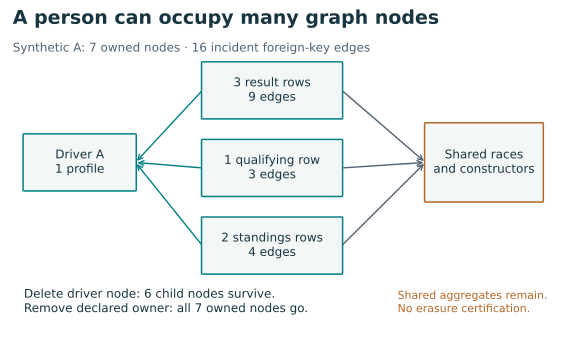
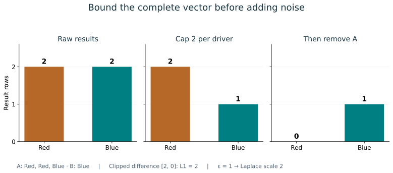
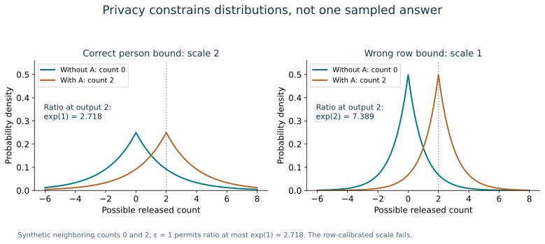
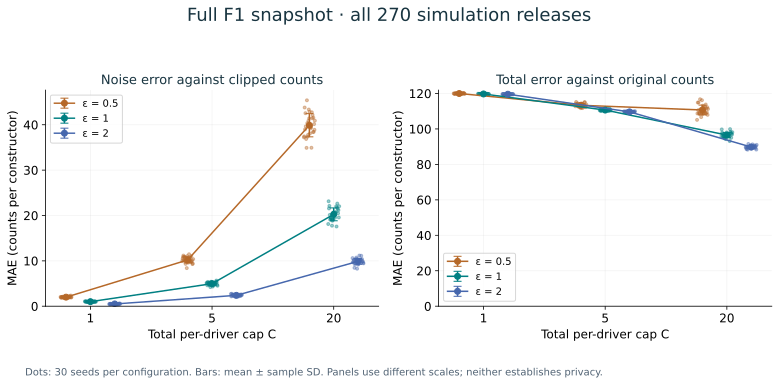

Year 5 · Quarter 3 · Lesson 187
Ethics & privacy on relational entity graphs
Your tangible win¶
Write a release contract that answers whose information changes, which records change, and what an observer receives. Then implement and audit a complete contribution-bounded histogram experiment. This supports the mission: a relational model's useful connections also create obligations that a flat-row evaluation can miss.
Author evidence: complete L187-F1-ENTITY-PRIVACY course experiment. All 857 drivers, 2,571 histogram neighbors and 270 simulated releases checked. Published private-GNN reproduction NOT_RUN; production DP and complete erasure NOT_ESTABLISHED. Learner PENDING_WRITTEN_DEFENSE.
Bridge from earlier work. Lesson 156 asked whether information existed at prediction time. Lesson 181 asked which target cells a model could see. This lesson asks what publishing an answer can reveal about a person. A time-valid, correctly masked model can still expose personal information. Lesson 186 added deadlines and freshness to the serving contract. Here we add what the response may reveal. The needed prerequisites are restated below; its simulator is not required.
1 · A person is not necessarily one node¶
Relational entity graph (REG). Represent each table row as a node. Represent each foreign-key reference as an edge. A foreign key is a column pointing to another table's row identity. One person can be represented by a profile row and many event rows. Graph-node privacy depends on this representation; it does not automatically mean person-level privacy.
Threat model. State what an observer already knows, what you release, and what they try to infer. Here the observer sees a constructor-count vector and may know public race metadata. The protected change will be one driver's declared contribution. We are not trying to hide public race names, nor promising to conceal every fact correlated with a driver's existence.
Worked example. Driver A owns a profile, three result rows, one qualifying row and two standings rows: seven nodes in total. Each result and qualifying row has three foreign keys; each standings row has two. There are 16 edges touching the declared owned set. Six point directly to the driver profile.


Deleting one result row removes that row and its three edges. Deleting the driver graph node removes the profile and its six incident edges, leaving six child nodes connected to shared context. In an SQL database, foreign-key constraints can reject parent-only deletion; cascades depend on schema configuration. Neither behavior should be guessed from a graph diagram.
Declared entity removal deletes the profile and all rows directly owned through driverId in results, qualifying and standings. It retains shared races, circuits, constructors and constructor aggregate tables. This is an explicit course policy, not a discovery that those are all possible traces of the person. A model checkpoint, a log, a backup or a constructor's historical points may retain derived information.
Scope check. Node deletion, contribution removal, anonymization and model unlearning are different operations. We execute the second under a declared ownership map. We do not certify complete erasure or retrain a model.
2 · Four questions that “no leakage” cannot answer¶
| Question | Example | Appropriate evidence |
|---|---|---|
| Was future information used? | Tomorrow's result enters today's context | Availability and temporal audit |
| Can a person be linked to records? | Removing names leaves distinctive relationships | Linkage threat model and disclosure audit |
| Can participation be inferred? | An output differs when one person is included | Membership attack plus a separate privacy analysis |
| Is the use acceptable? | A permitted prediction is used for a harmful purpose | Purpose, authority, affected-person review and recourse |
An unsuccessful membership attack only tests that attack under its assumptions. It does not establish a universal privacy guarantee. Conversely, a population-level fact may be learnable even with a private mechanism. Privacy also does not establish fairness: a model can protect participation while producing systematically harmful decisions.
Ethics decision exercise. Imagine replacing the public F1 records with patients, visits and hospitals. A researcher proposes releasing hospital counts and retaining embeddings for future projects. Before choosing a noise level, write the intended benefit, the permission or authority for that use, the minimum necessary fields, who can see each output, and a route to challenge harmful use. Explain why public availability or technical access alone would not settle those choices. This is a research-design exercise, not legal advice or a compliance certification.
3 · Fix the neighboring databases before the noise¶
In plain terms. A privacy guarantee limits how much the released answer's distribution can change when one protected contribution is added or removed. You must first define that contribution.
Call two databases neighbors when one contains one additional driver's complete declared contribution and everything else is fixed. Stable driver and row identities remain unchanged for other people. Shared metadata is fixed. This is add/remove adjacency. Replacing one driver's whole contribution can instead require a bound of 2C below.
For a randomized mechanism M and every output event S, pure ε-differential privacy requires:
Pr[M(D) ∈ S] ≤ exp(ε) × Pr[M(D′) ∈ S]
Here D and D′ are neighbors, Pr is probability over the mechanism's hidden randomness, exp is the exponential function, and ε (epsilon) controls the allowed multiplicative change. The inequality must hold in both directions because neighboring is symmetric. Smaller ε is a stronger restriction. This is a distributional statement over all allowed neighbors and events, not a bound on one sampled output difference. See Dwork and Roth, Definition 2.4.
Our query. Count result rows in each constructor category. A histogram is the vector of these counts. Its category list is all 211 constructor IDs from the pinned public snapshot, fixed across neighboring datasets. A private category list must not be discovered and published for free. Our count mechanism reads only result IDs, driver IDs and constructor IDs; changes to other declared owned tables do not enter that query.
Worked example. A's result sequence is Red, Red, Blue; B has Blue. The raw histogram is [2, 2]. Keep at most C = 2 results per driver, ordered by immutable result ID. The clipped histogram is [2, 1]. Removing A produces [0, 1]: the whole vector changes by two counts.
Why the cap is across bins. Allowing C contributions per constructor would let one driver affect many bins, exceeding the claimed total bound. Sorting must be local to each owner; deleting A must not change which of B's rows survive. Our deterministic first-events rule is auditable but changes the scientific quantity: it emphasizes earlier results in the snapshot.


4 · Derive the bound, then choose the mechanism¶
L1 distance adds the absolute coordinate differences between two vectors. Global sensitivity is the largest such query difference over all allowed neighboring databases, not just the largest difference observed in this snapshot.
Each retained result adds one to exactly one bin. A driver's retained rows therefore form a nonnegative vector whose coordinates sum to at most C. Other drivers' vectors are unchanged by removal. The histogram difference has L1 norm at most C. This argument holds for every database in the declared domain; the 2,571 actual deletion checks test the implementation but do not replace the argument.
Laplace mechanism. Add independent Laplace noise to every bin with scale b = C / ε. This symmetric noise has density proportional to exp(−|z|/b) and expected absolute magnitude b. For two neighboring query vectors, the density ratio at any output is at most exp(||f(D)−f(D′)||₁/b) ≤ exp(ε). Integrating over output events yields the required inequality. The scale uses the whole vector's sensitivity; this is one vector release, not 211 separately budgeted scalar queries. Dwork and Roth, Definition 3.4 and Theorem 3.6.
At C = 2 and ε = 1, the scale is two counts per coordinate. Noise can yield fractional or negative counts. We retain those values in the experiment so their error is transparent. Rounding or clamping an already private release is post-processing, but changes utility. It cannot fix a wrong sensitivity bound.


Repeated releases. Fresh answers for the same population reveal more. Basic sequential composition adds their ε values. Thirty independent ε = 1 releases have an upper bound of ε = 30, not ε = 1. Re-reading the exact same released answer costs nothing extra. Our nine configurations with 30 repetitions would have basic bound 315 if they were genuine private mechanisms released together. They are public simulations, so that number is an accounting exercise, not their privacy certification. Dwork and Roth, Corollary 3.15.
Scope check. The proof is for ideal hidden randomness and real arithmetic. The notebook intentionally publishes the raw data, seeds and float64 outputs. An observer who knows the noise can subtract it. This implementation is an inspectable simulator, not a production differential-privacy service; finite-precision sampling also requires a separate analysis.
5 · Complete experiment, visible limitations¶
Held fixed: all nine F1 tables, all drivers, the public constructor domain, stable ownership, row-ID ordering and the full results population. Varied: C ∈ {1, 5, 20}, ε ∈ {0.5, 1, 2}, seeds 0–29. Measured: owned records and edges, deletion effects, clipping loss, noise error and error against the original histogram. There is no training, hyperparameter selection or temporal forecasting claim. All dates belong to a static descriptive snapshot.
Predict first. Will a larger cap always reduce error relative to the original histogram? Write down the two competing effects: retaining more records reduces clipping loss, while the same ε requires more noise.
The full nine-table snapshot contains 70,876 declared owned records and 175,933 edges incident to those owned sets. Driver ID 3 has the largest contribution: 370 results + 353 qualifying + 372 standings + 1 driver = 1,096 records. These IDs are snapshot identities, not names inferred by an attack.
| Cap C | ε | Kept / 26,080 | Clipping L1 | Noise MAE ± SD | Raw MAE ± SD |
|---|---|---|---|---|---|
| 1 | 0.5 | 857 | 25,223 | 1.997 ± 0.124 | 119.977 ± 0.150 |
| 1 | 1 | 857 | 25,223 | 1.006 ± 0.058 | 119.720 ± 0.099 |
| 1 | 2 | 857 | 25,223 | 0.498 ± 0.044 | 119.587 ± 0.039 |
| 5 | 0.5 | 3,135 | 22,945 | 10.209 ± 0.662 | 113.344 ± 0.951 |
| 5 | 1 | 3,135 | 22,945 | 4.973 ± 0.337 | 110.636 ± 0.378 |
| 5 | 2 | 3,135 | 22,945 | 2.397 ± 0.164 | 109.623 ± 0.192 |
| 20 | 0.5 | 8,260 | 17,820 | 39.891 ± 2.555 | 110.678 ± 2.745 |
| 20 | 1 | 8,260 | 17,820 | 20.253 ± 1.415 | 96.531 ± 1.481 |
| 20 | 2 | 8,260 | 17,820 | 9.897 ± 0.651 | 89.770 ± 0.797 |
Read the columns carefully. Clipping L1 is the total number of discarded results. Noise MAE is mean absolute error per constructor relative to the clipped query. Raw MAE compares the release with the original full histogram. The table reports mean ± sample standard deviation across 30 seeds; it is descriptive simulation variation, not uncertainty across new databases or a privacy proof.


The local verifier independently checks all primary/foreign keys, ownership counts with SQL, every driver deletion at all three caps, every saved vector and scalar error calculation. The full evidence, driver audit, verification receipt and frozen protocol preserve exact results.
The erasure boundary is measured too. Shared constructor-result aggregates are joined through race and constructor keys to 24,501 distinct driver/aggregate pairs in this snapshot. These are retained relationships, not 24,501 proven attacks. They demonstrate why a direct foreign-key ownership policy does not establish removal of every derived trace.
6 · What changes for a GNN?¶
A graph neural network mixes a node's features with its neighbors' features. Removing one person can therefore change messages used in several predictions and gradient computations. Clipping each training row as if the examples were independent is not automatically a person-level proof. The protected unit, sampling, message dependencies, preprocessing, training and inference access all need accounting.
GAP proposes noisy aggregation for private graph learning. Xiang, Wang and Wang, v2 §VI report flaws in the privacy treatment of instance embeddings and analyze GAP's aggregation noise. Attribute that finding to their analysis. Neither their critique nor reproducing an accuracy table is a new local privacy proof.
Scope check. This lesson does not implement GAP or HeterPoisson, train a private GNN, or reproduce their published benchmarks. Full execution here means the named course audit and histogram experiment. Paper reproduction remains
NOT_RUN. A private histogram also does not privatize a model trained on the original graph.
7 · Implement, explain, return later¶
Open the student notebook, executed walkthrough, or solution. The lab contains all input tables with hashes, readable functions, three live TODOs and an independent verifier. Implement ownership counting, stable per-person clipping and the scale/composition contract. Checks call your functions on synthetic counterexamples and then on the complete dataset.
EXIT: explain why the largest owner has 1,096 records; derive C rather than asserting it; distinguish count error from privacy; explain why publishing the seed changes the release contract; and defend one ethically acceptable use with an explicit limitation. Send the written defense and check output to the teaching agent. Author execution does not establish your mastery.
Spaced return. Tomorrow, derive the scale without looking. In one week, change the policy to per-category clipping and find a counterexample. Compare a time-valid but privacy-unsafe release with a noisy release whose intended use is still unacceptable.
Primary reading: Dwork and Roth, definitions and Laplace/composition sections linked above. Use the privacy contract reference when auditing another database. Ask follow-up questions wherever the ownership map or proof feels unclear.
Next: Lesson 188. Carry the distinction between a reported result and an established guarantee into your paper log. Record what each source actually supports before choosing a research direction.